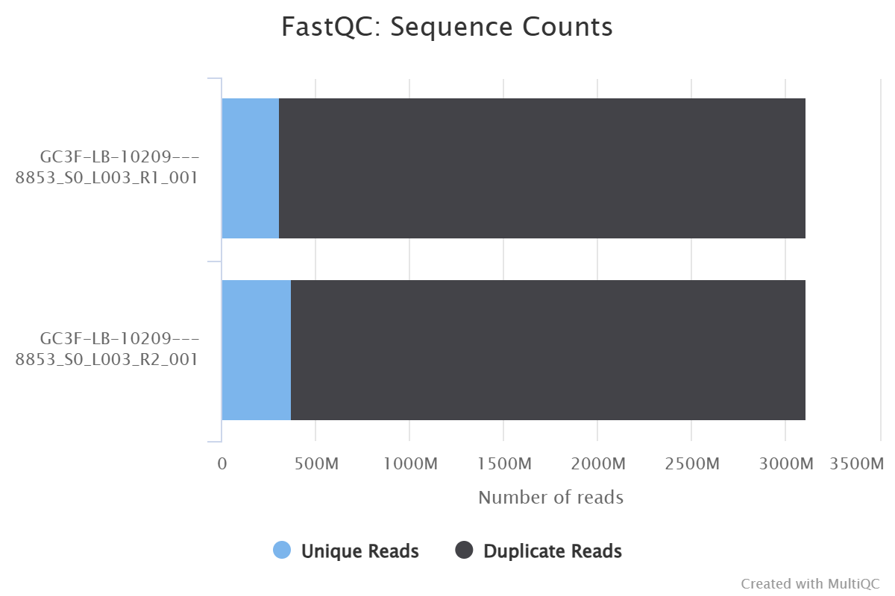
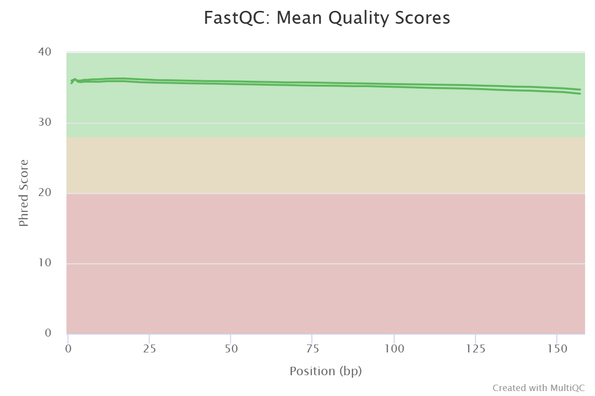
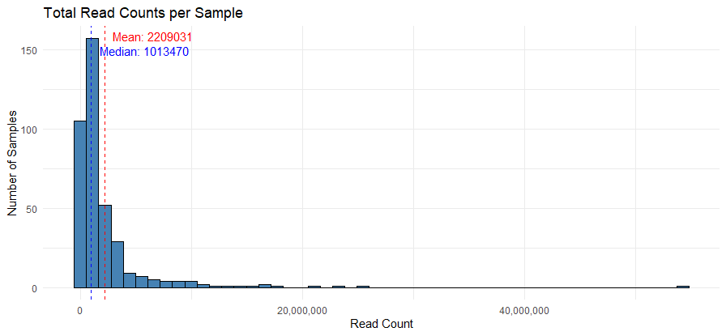
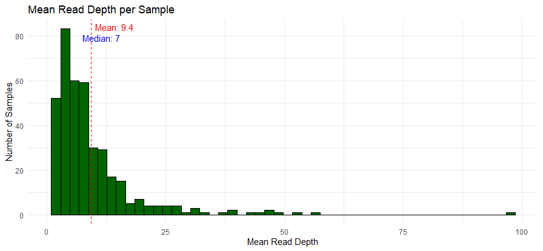
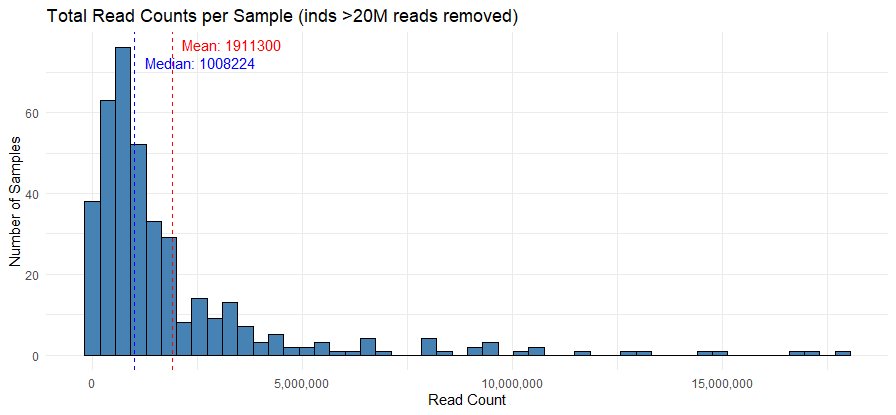
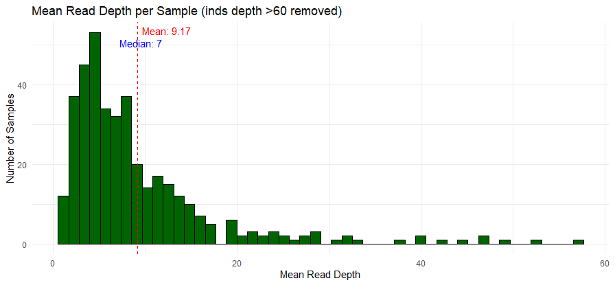

Rockfish RAD-seq: Bioinformatics and unexpected data weirdness
Welcome to my FISH 546 compendium!
This is a snippet of my MS research, wherein I am taking samples of brown, copper, and quillback rockfishes (Sebastes spp.) from the Salish Sea (Puget Sound and the Georgia Basin) and the Pacific Coast to investigate population structure and patterns of hybridization between these species. So, that means what different populations within the species exist (ie., are copper rockfish in Puget Sound genetically different from copper rockfish on the coast?) and if/to what extent these species mate with each other and produce offspring (or, more realistically, did they do this in the past? We can find this out!)
These three are known to hybridize (Schwenke et al. 2018; Buonaccorsi 2002, 2005; Seeb 1998) and recent research contrasts previously seen patterns (Wray et al. 2018); my project is designed to address the gaps in previous work to (ideally) tease apart these patterns. Rockfishes are a vital part of Puget Sound and have been closed to fishing within the Sound for quite some time now (since ~2000 for commercial, 2010 for recreational), so getting a clear picture of their population status and hybrid background can help inform management tactics to aid in their recovery.
Here, I will take raw sequencing data (straight from the sequencing facility!) and process it through a common bioinformatics pipeline to prepare for downstream analysis, as well as investigate the issues that subsequently popped up with my data during this process.
Disclaimer: My data is in Hyak (Klone)
In order to avoid many headaches from running and transferring my data between two places (since I need all of my work to live on Hyak anyway), I have done the heavily lifting through job scheduling (slurm) on Hyak and keep my files there as well (final, intermediate, and otherwise). For this class project, I have uploaded the important files to my repo (code, some output files, etc.).
Quality control
The first step is always to check out the data to see what the quality is, and any weird signals that may be at the forefront already. My data has been sequenced on a NovaSeq 6000 S4 run type and has been sent to me in the form of per-library zipped fastq files - two for each library, denoting the forward and reverse reads, as this is a paired-end sequencing run (150bp).
Here are screenshots of my MultiQC results:
 
The duplication rate is quite high, but that’s not unexpected for RAD-seq, given the presence of PCR steps in the lab protocol. The quality of my samples looks great overall! Moving on to the next step.
Demultiplex
Now we can demultiplex the libraries - this assigns sequences to individuals based on their unique barcode combination - a 6bp library barcode in the header, and a 10bp barcode inline with the sequence.
For my pipeline, I’m using STACKS v2.61 process_radtags, which will then output my files in fastq format (forward and reverse reads, so files with 1 and 2 in their suffix).
Here is my script - it runs through each pair of library read files (R1 and R2) for every library separately:
#!/bin/bash
#SBATCH --job-name=process_radtags_bylibdemux
#SBATCH --account=merlab
#SBATCH --partition=compute-hugemem
#SBATCH --nodes=1
#SBATCH --ntasks-per-node=32
## Walltime (days-hours:minutes:seconds format)
#SBATCH --time=5-12:00:00
## Memory per node
#SBATCH --mem=500G
#SBATCH --mail-type=ALL
#SBATCH --mail-user=lizboggs@uw.edu
##### ENVIRONMENT SETUP ##########
## Specify the directory containing data
RAWDIR=/mmfs1/gscratch/merlab/lizboggs/rawrad_demuxlibs/demux.2025-05-14.maybe_final
OUTDIR=/mmfs1/gscratch/scrubbed/lizboggs/demultiplexed_by_lib
BARCODES=/gscratch/merlab/lizboggs/barcodes
MYCONDA=/gscratch/merlab/software/miniconda3/etc/profile.d/conda.sh
MYENV=stacks_env
## Activate the conda environment:
## start with clean slate
module purge
## This is the filepath to our conda installation on Klone. Source command will allow us to execute commands from a file in the current shell
source $MYCONDA
## activate the conda environment
conda activate $MYENV
#####################PLATE 01: LIB INDEX ATCACG ##############################################################################################
### Separates raw sequencing files into individual IDs based on matching barcodes
process_radtags \
-1 ${RAWDIR}/ATCACG_S3_L003_R1_001.fastq.gz \
-2 ${RAWDIR}/ATCACG_S3_L003_R2_001.fastq.gz \
-o $OUTDIR \
-b $BARCODES/rflib01_barcodes_withlib.txt \
--inline_index \
-i gzfastq \
-y fastq \
-E phred33 \
--bestrad \
-e sbfI \
-q \
--filter_illumina \
-c \
-t 130 \
--adapter_1 AGATCGGAAGAGCACACGTCTGAACTCCAGTCA \
--adapter_2 AGATCGGAAGAGCGTCGTGTAGGGAAAGAGTGT \
-r \
--barcode_dist_1 1 \
--barcode_dist_2 1 \
#####################PLATE 02: LIB INDEX CGATGT ##############################################################################################
### Separates raw sequencing files into individual IDs based on matching barcodes
process_radtags \
-1 ${RAWDIR}/CGATGT_S2_L003_R1_001.fastq.gz \
-2 ${RAWDIR}/CGATGT_S2_L003_R2_001.fastq.gz \
-o $OUTDIR \
-b $BARCODES/rflib02_barcodes_withlib.txt \
--inline_index \
-i gzfastq \
-y fastq \
-E phred33 \
--bestrad \
-e sbfI \
-q \
--filter_illumina \
-c \
-t 130 \
--adapter_1 AGATCGGAAGAGCACACGTCTGAACTCCAGTCA \
--adapter_2 AGATCGGAAGAGCGTCGTGTAGGGAAAGAGTGT \
-r \
--barcode_dist_1 1 \
--barcode_dist_2 1 \
#####################PLATE 03: LIB INDEX TTAGGC ###############################################################################################
### Separates raw sequencing files into individual IDs based on matching barcodes
process_radtags \
-1 ${RAWDIR}/TTAGGC_S1_L003_R1_001.fastq.gz \
-2 ${RAWDIR}/TTAGGC_S1_L003_R2_001.fastq.gz \
-o $OUTDIR \
-b $BARCODES/rflib03_barcodes_withlib.txt \
--inline_index \
-i gzfastq \
-y fastq \
-E phred33 \
--bestrad \
-e sbfI \
-q \
--filter_illumina \
-c \
-t 130 \
--adapter_1 AGATCGGAAGAGCACACGTCTGAACTCCAGTCA \
--adapter_2 AGATCGGAAGAGCGTCGTGTAGGGAAAGAGTGT \
-r \
--barcode_dist_1 1 \
--barcode_dist_2 1 \
##################PLATE 04: LIB INDEX TGACCA ##################################################################################################
### Separates raw sequencing files into individual IDs based on matching barcodes
process_radtags \
-1 ${RAWDIR}/TGACCA_S4_L003_R1_001.fastq.gz \
-2 ${RAWDIR}/TGACCA_S4_L003_R2_001.fastq.gz \
-o $OUTDIR \
-b $BARCODES/rflib04_barcodes_withlib.txt \
--inline_index \
-i gzfastq \
-y fastq \
-E phred33 \
--bestrad \
-e sbfI \
-q \
--filter_illumina \
-c \
-t 130 \
--adapter_1 AGATCGGAAGAGCACACGTCTGAACTCCAGTCA \
--adapter_2 AGATCGGAAGAGCGTCGTGTAGGGAAAGAGTGT \
-r \
--barcode_dist_1 1 \
--barcode_dist_2 1 \
####################PLATE 05: LIB INDEX GCCAAT ###############################################################################################
### Separates raw sequencing files into individual IDs based on matching barcodes
process_radtags \
-1 ${RAWDIR}/GCCAAT_S5_L003_R1_001.fastq.gz \
-2 ${RAWDIR}/GCCAAT_S5_L003_R2_001.fastq.gz \
-o $OUTDIR \
-b $BARCODES/rflib05_barcodes_withlib.txt \
--inline_index \
-i gzfastq \
-y fastq \
-E phred33 \
--bestrad \
-e sbfI \
-q \
--filter_illumina \
-c \
-t 130 \
--adapter_1 AGATCGGAAGAGCACACGTCTGAACTCCAGTCA \
--adapter_2 AGATCGGAAGAGCGTCGTGTAGGGAAAGAGTGT \
-r \
--barcode_dist_1 1 \
--barcode_dist_2 1 \
## deactivate the conda environmentResults show that my sequences had an average of ~80% reads retained - fantastic! Here is an example of one of my samples’ log results:
687916298 total sequences
167394182 reads were transposed [based on the BestRAD flag] (24.3%)
0 failed Illumina filtered reads (0.0%)
50293144 reads contained adapter sequence (7.3%)
54517844 barcode not found drops (7.9%)
1393574 low quality read drops (0.2%)
2312311 RAD cutsite not found drops (0.3%)
579399425 retained reads (84.2%)Let’s now move on to a cleaning step and then we can align.
Remove PCR Duplicates
To clean the data, we first need to remove duplicate reads (“clones”) that result from PCR amplification. For this, I used STACKS clone_filter, the natural next step in the STACKS pipeline.
Here is the code:
#!/bin/bash
#SBATCH --job-name=clone_filter_rockfish3
#SBATCH --account=merlab
#SBATCH --partition=compute-hugemem
#SBATCH --nodes=1
#SBATCH --ntasks-per-node=16
## Walltime (days-hours:minutes:seconds format)
#SBATCH --time=16:00:00
## Memory per node
#SBATCH --mem=300G
#SBATCH --mail-type=ALL
#SBATCH --mail-user=lizboggs@uw.edu
##### ENVIRONMENT SETUP ##################################
## Specify the directories containing data
DATADIR=/mmfs1/gscratch/scrubbed/lizboggs/demultiplexed_by_lib
OUTDIR=/mmfs1/gscratch/scrubbed/lizboggs/clone_filter3
MYCONDA=/gscratch/merlab/software/miniconda3/etc/profile.d/conda.sh
MYENV=stacks_env
## start with clean slate
module purge
## This is the filepath to our conda installation on Klone. Source command will allow us to execute commands from a file in the current shell
source $MYCONDA
## activate the conda environment
conda activate $MYENV
############ Run clone_filter #############################
cd $DATADIR
IND_ID=$(cat /gscratch/merlab/lizboggs/barcodes/clonefilter_barcodes.txt | cut -f3)
for i in ${IND_ID};
do
echo i
clone_filter \
-1 $DATADIR/${i}.1.fq \
-2 $DATADIR/${i}.2.fq \
-o $OUTDIR \
&>> $OUTDIR/output.txt
done
mv *.1.1.fq ../clone_filter3
mv *.2.2.fq ../clone_filter3
for i in ${IND_ID};
do
cat /gscratch/scrubbed/lizboggs/clone_filter3/${i}.1.1.fq > /gscratch/scrubbed/lizboggs/clone_filter3/${i}.1.fq
cat /gscratch/scrubbed/lizboggs/clone_filter3/${i}.2.2.fq > /gscratch/scrubbed/lizboggs/clone_filter3/${i}.2.fq
done
## deactivate the conda environment
conda deactivateA sample result from my run:
4759578 pairs of reads input. 863047 pairs of reads output, discarded 3896531 pairs of reads, 81.87% clone reads.This tracks with the duplication level seen in my FastQC files. What is a bit suspicious is that my negative controls (there are 5 - one for each extraction plate I did in the lab) are also retaining reads in a non-insignificant way… around 20-40%. Let’s put a pin in that.
Align to reference geneome
Time to align and hope for the best! Here, I am using the honeycomb rockfish genome (Sebastes umbrosus). This is the closest relative to my three rockfish species that has a chromosome-level reference-quality genome; that being said, it also has the benefit of not being a hybridizing species, so it’s a bit more of an even playing field to map to for my somewhat messy species.
I am using bowtie2 to align my data to the genome. Here is the code:
#!/bin/bash
#SBATCH --job-name=bowtie2_rockfish
#SBATCH --account=merlab
#SBATCH --partition=compute-hugemem
#SBATCH --nodes=1
#SBATCH --ntasks-per-node=32
## Walltime (days-hours:minutes:seconds format)
#SBATCH --time=10-12:00:00
## Memory per node
#SBATCH --mem=300G
#SBATCH --mail-type=ALL
#SBATCH --mail-user=lizboggs@uw.edu
##### ENVIRONMENT SETUP ##########
DATADIR=/mmfs1/gscratch/scrubbed/lizboggs/clone_filter3 # input files that were previously demuxed
MYLANEID=621.3 # The sequencing id of the lane (you can set this to whatever value you want)
GENOMEDIR=/mmfs1/gscratch/merlab/lizboggs/genome # The directory containing the reference genome
GENOME_PREFIX=GCF_015220745.1_fSebUmb1.pri_genomic # prefix of .bt2 files made by bowtie2 (the name of the genome, without the suffixes)
SUFFIX1=.1.fq # Suffix to the fastq files - The forward reads with paired-end data.
SUFFIX2=.2.fq # Suffix to the fastq files - The reverse reads with paired-end data.
OUTDIR=/mmfs1/gscratch/scrubbed/lizboggs/sam # where to store output files
##############################################################################
export PATH=/mmfs1/gscratch/merlab/software/miniconda3/bin:$PATH
## 1. Index the rockfish genome so bowtie2 can use it
bowtie2-build -f $GENOMEDIR'/'$GENOME_PREFIX'.fna' $GENOMEDIR'/'$GENOME_PREFIX
## 2. Make directory for output files (commented out if already made prior to running this script)
#mkdir $OUTDIR
## 3. Move into the directory containing the fastq files
cd $DATADIR
## 4. Run bowtie over all samples in the sample list
for MYFILE in $DATADIR'/'*$SUFFIX1
do
echo $MYFILE
MYBASE=`basename --suffix=$SUFFIX1 $MYFILE`
echo ${MYBASE}
bowtie2 -x $GENOMEDIR'/'$GENOME_PREFIX\
--phred33 -q \
-1 ${MYBASE}$SUFFIX1 \
-2 ${MYBASE}$SUFFIX2 \
-S ${MYBASE}.sam \
--very-sensitive \
--minins 0 --maxins 1500 --fr \
--threads ${SLURM_JOB_CPUS_PER_NODE} \
--rg-id ${MYBASE} --rg SM:${MYBASE} --rg LB:${MYBASE} --rg PU:${MYLANEID} --rg PL:ILLUMINA
done
# Move all of the sam files to the output directory
mv *'.sam' $OUTDIRAnd here is an example of a mapped individual’s output:
/mmfs1/gscratch/scrubbed/lizboggs/clone_filter3/QB50152B.1.fq
QB50152B
191457 reads; of these:
191457 (100.00%) were paired; of these:
21521 (11.24%) aligned concordantly 0 times
145545 (76.02%) aligned concordantly exactly 1 time
24391 (12.74%) aligned concordantly >1 times
----
21521 pairs aligned concordantly 0 times; of these:
782 (3.63%) aligned discordantly 1 time
----
20739 pairs aligned 0 times concordantly or discordantly; of these:
41478 mates make up the pairs; of these:
25936 (62.53%) aligned 0 times
11126 (26.82%) aligned exactly 1 time
4416 (10.65%) aligned >1 times
93.23% overall alignment rateCool! Looks like it worked! A rate of 75% for aligning concordantly exactly 1 time and overall alignment averaging around 90% is excellent. Let’s get these files in a workable format.
Converting SAM to BAM
Before I can do any analyses, I need to transform these files into smaller, more easily processed files. We do this with BAM - binary alignment/map files. Computer-readable, not at all human readable. Practically wingdings if you try to print one out. Anyway! For this, I used samtools. This will also produce sorted BAM files, which are indexed BAM files according to their place in the chromosomes/scaffolds.
Here is the script:
#!/bin/bash
#SBATCH --job-name=samtools_rockfish
#SBATCH --account=merlab
#SBATCH --partition=compute-hugemem
#SBATCH --nodes=1
#SBATCH --ntasks=1
#SBATCH --cpus-per-task=32
## Walltime (days-hours:minutes:seconds format)
#SBATCH --time=4-12:00:00
## Memory per node
#SBATCH --mem=300G
#SBATCH --mail-type=ALL
#SBATCH --mail-user=lizboggs@uw.edu
##### ENVIRONMENT SETUP #####################
cd /mmfs1/gscratch/scrubbed/lizboggs
mkdir -p bam
## Specify the directory containing data
DATADIR=/mmfs1/gscratch/scrubbed/lizboggs/allsam # directory with ALL of my sam files, both fresh from clone_filter and those that had to be fixed post-clone_filter
SUFFIX1=.sam # file suffix
OUTDIR=/mmfs1/gscratch/scrubbed/lizboggs/bam # where to store output files
MYCONDA=/mmfs1/gscratch/merlab/software/miniconda3/etc/profile.d/conda.sh # path to conda installation on our Klone node - do NOT change this
MYENV=samtools_env # name of the conda environment containing samtools software
THREADS=$SLURM_CPUS_PER_TASK
## Start with clean slate
module purge
## Source command will allow us to execute commands from a file in the current shell
source $MYCONDA
## Activate the conda environment
conda activate $MYENV
###################################################################################################################
## Move into the working directory and run script
cd $DATADIR
## Run samtools commands. This takes about 5 min per sample (anticipating ~32 hour runtime for this run, as I have 389 samples)
for MYSAMPLEFILE in *$SUFFIX1
do
echo $MYSAMPLEFILE
MYBASE=`basename --suffix=$SUFFIX1 $MYSAMPLEFILE`
samtools view -@ $THREADS -bS -F 4 $MYBASE'.sam' > $MYBASE'.bam'
samtools view -@ $THREADS -h -q 20 $MYBASE'.bam' | samtools view -@ $THREADS -buS - | samtools sort -@ $THREADS -o $MYBASE'_minq20_sorted.bam'
samtools index $MYBASE'_minq20_sorted.bam'
done
## Flag explanations for samtools view:
## -b output BAM
## -h include header in SAM output
## -q INT only include reads with mapping quality >= INT [0]
## -F INT only include reads with none of the bits set in INT set in FLAG [0] (aka when this is set to 4, you remove unmapped reads)
# Move all of the bam files to the output directory
mv *'.bam' $OUTDIR
mv *'.bai' $OUTDIR
## Deactivate the conda environment
conda deactivateI can now grab some stats on my alignments! Let’s check out a chunk of individuals’ total reads:
CO50111B_minq20_sorted.bam 1037657
CO50111_minq20_sorted.bam 808879
CO50112B_minq20_sorted.bam 290383
CO50112_minq20_sorted.bam 396416
CO50113B_minq20_sorted.bam 783780
CO50113_minq20_sorted.bam 1233396
NEGCONT01_minq20_sorted.bam 152204
NEGCONT02_minq20_sorted.bam 195029
NEGCONT03_minq20_sorted.bam 116627
NEGCONT04B_minq20_sorted.bam 113128
NEGCONT04_minq20_sorted.bam 96766
QB50001_minq20_sorted.bam 2591497
QB50003_minq20_sorted.bam 50538
QB50004_minq20_sorted.bam 699732
QB50005_minq20_sorted.bam 1525392
QB50006_minq20_sorted.bam 646550
QB50007_minq20_sorted.bam 199123
QB50008_minq20_sorted.bam 49282
QB50010_minq20_sorted.bam 1052125While the actual fish samples look fairly normal in read count, albeit a bit low, those negative controls are looking too high - #%@*!!! Ideally, you want to see practically NO reads for negative controls, ie. only 0-100 reads per control maximum. 100,000 is a lot higher than that, obviously!
Uh oh… my negative controls!
Given how meticulously careful I was in the lab, I certainly wasn’t expecting to see that my negative controls - extraction plate wells with NO DNA put into them - returned reads in some slightly scary numbers! This pretty much halted my plan and warrants further investigating.
Let’s check out the aligned data more…
I plotted the total read counts (how many total reads per individual) and mean depths of reads (the mean of how many times a base was sequenced, plotted per individual as well), along with their mean and median.
 
Since those crazy outliers are dragging the values up a bit and making it hard to see the majority of the results, here are some adjusted plots - I removed individuals over 20M reads for the read counts, and reads with a depth of over 60 were removed for the depth plot.
 
Weird read depth and read counts - that’s TWO problems now!
Even though I treated my data primarily as “plug and play” with script skeletons borrowed from labmates, my data has behaved intensely different from theirs. Something has clearly gone awry and I now need to chase down where it happened and try to see why.
Where I go from here
LOTS to do now! There’s a hodgepodge of things I am running to investigate these issues further - BLASTing my negative controls to see what they align to, checking out the length of my RADtags to see if they even make sense (so far, they don’t), and running the next step in the pipeline on my data anyway to see where the negative controls cluster in a PCA with actual samples of my rockfish.
While this isn’t the fun, exciting result I had hoped for, it does bring up very important points: 1) don’t trust your data - hey, where have I heard that before? - and 2) negative controls may be worth your time. If this is not a weird bug somewhere in my pipeline causing my negative controls to be assigned reads they shouldn’t have, then I do have contamination on my hands and that is VERY important to know when it comes to drawing conclusions from a dataset.
Onward I go to the 1,000 things I need to check and rerun! But hey, that’s science!!
References
Buonaccorsi, Vincent P., Carol A. Kimbrell, Eric A. Lynn, and Russell D. Vetter. “Limited Realized Dispersal and Introgressive Hybridization Influence Genetic Structure and Conservation Strategies for Brown Rockfish, Sebastes Auriculatus.” Conservation Genetics 6, no. 5 (September 2005): 697–713. https://doi.org/10.1007/s10592-005-9029-1.
Schwenke, Piper L., Linda K. Park, and Lorenz Hauser. “Introgression among Three Rockfish Species (Sebastes Spp.) in the Salish Sea, Northeast Pacific Ocean.” Edited by Tzen-Yuh Chiang. PLOS ONE 13, no. 3 (March 22, 2018): e0194068. https://doi.org/10.1371/journal.pone.0194068.
Seeb, LW. “Gene Flow and Introgression within and among Three Species of Rockfishes, Sebastes Auriculatus, S. Caurinus, and S. Maliger.” Journal of Heredity 89, no. 5 (September 1, 1998): 393–403. https://doi.org/10.1093/jhered/89.5.393.
Wray, Anita, Eleni Petrou, Krista M. Nichols, Robert Pacunski, Larry LeClair, Kelly S. Andrews, Marty Kardos, and Lorenz Hauser. “Contrasting Effect of Hybridization on Genetic Differentiation in Three Rockfish Species with Similar Life History.” Evolutionary Applications 17, no. 7 (2024): e13749. https://doi.org/10.1111/eva.13749.